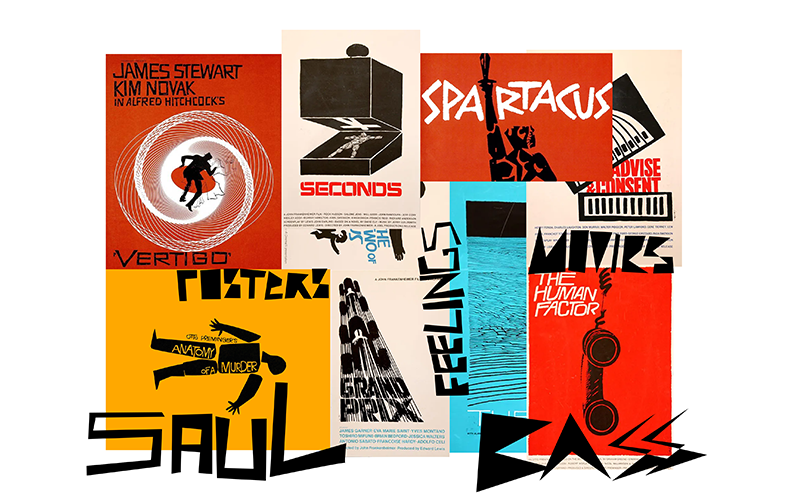
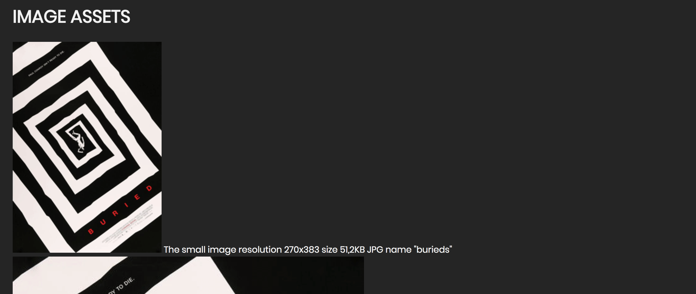
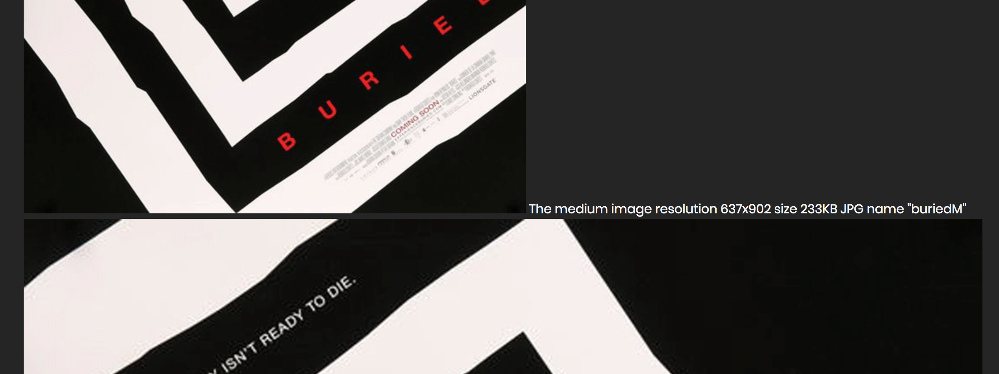
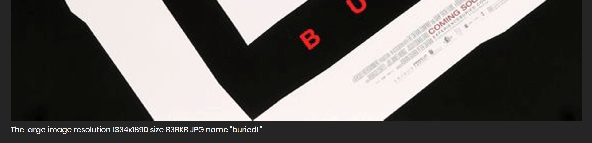
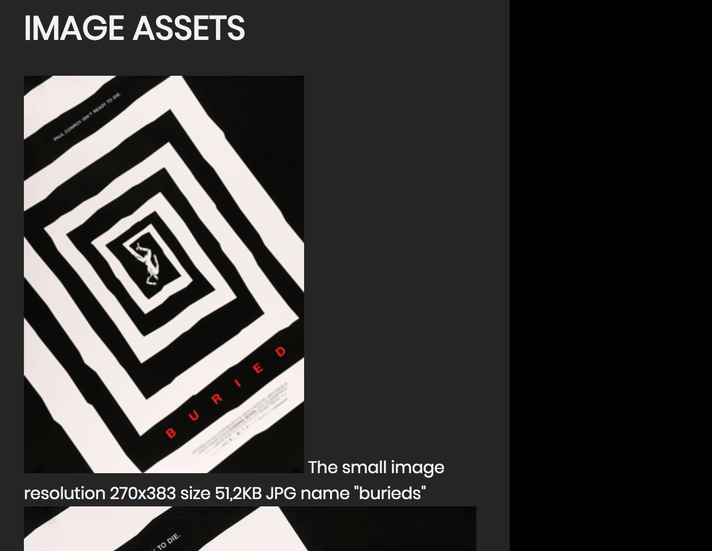
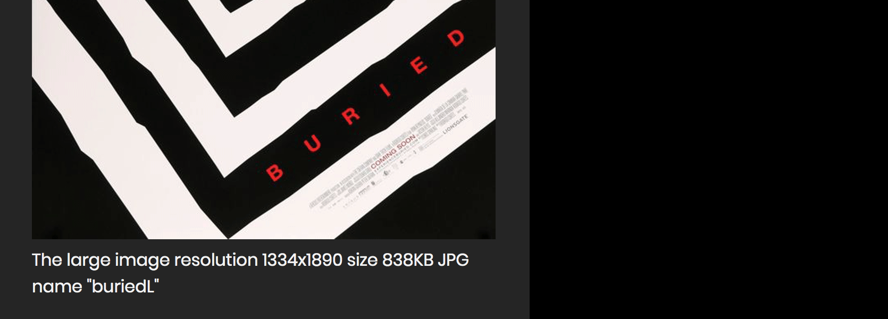

Theme 1 - Moodboard and Responsive Website
Moodboard
In theme 1, assigment that gave me the most joy was the moodboard with Saul Bass posters. I knew the Saul Bass work before and when I found out that we need to work with his art I was very pleased and excited. It was only my second time creating a moodboard but with helpful advices from the teacher it went well. I think that preparing a moodboard is an interesting idea and from that very moment, I try to implement it in my projects.

Responsive Website
At the begginig of our journey with web desing and coding, we did an assignment about very important aspect which is Responsive Web Design. Assigmnet was also related to Saul Bass, so it was really fun to work with, even though we have just started to learn the HTML and CSS. Responsive Web Design is important feature of every website right now. It makes your website user friendly on mobile devices and we all know that nowadays most of the people use smart phones to surf the Internet. Below you will find the screenshoots with examples of responsive images and link to my responsive website.
Website with image assets




